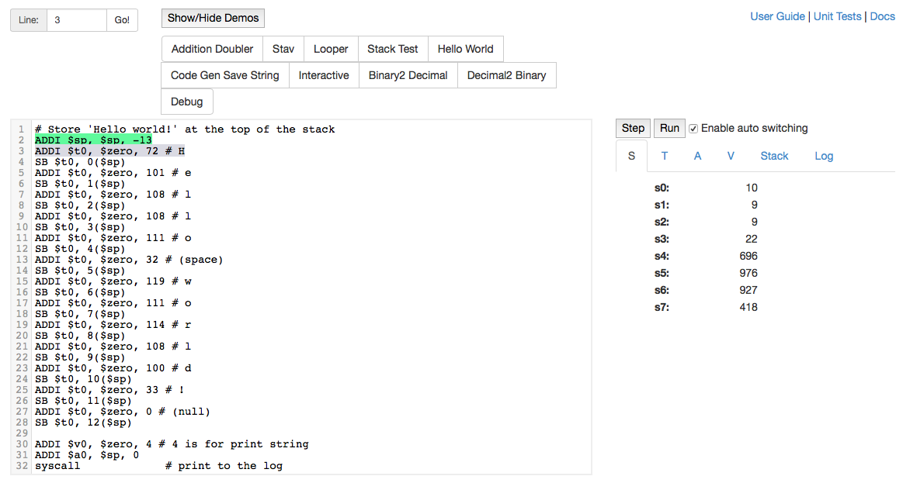
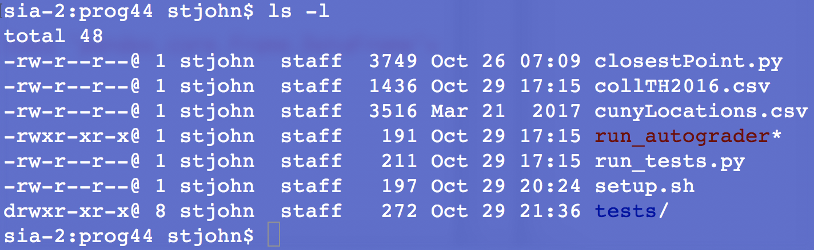
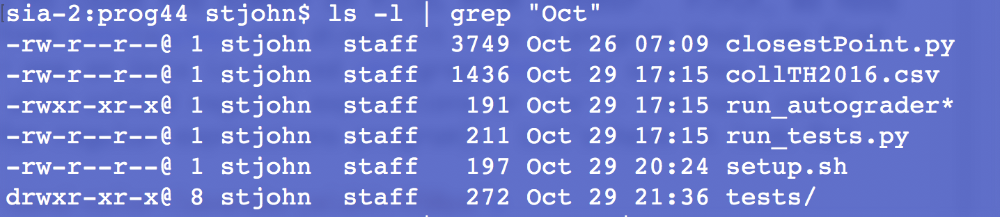
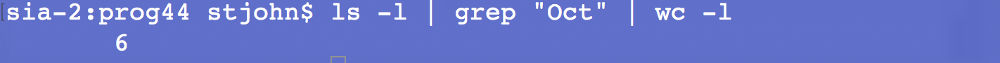

Today's lab will introduce a simplified machine language.
Software tools needed: web browser and a graphical editor, such as gEdit.
References:
In today's lab, we will explore a programming language that is very "low level" in that it maps very closely to the actual commands that are used by the computer's processor.
We will use an emulator, WeMIPS, to emulate what a machine-level language would do for a popular class of computer processors, MIPS. Processors with MIPS are a Reduced Instructor Set Computer (RISC), meaning they have fewer different types of instructions that the processor knows (and thus fewer that have to be implemented, leading to faster processors).
Let's start by looking at a program that will print "Hello World":

If you would like to follow along, using the emulator, open the window and toggle the "Show/Hide Demos" button and then click on the "Hello World" demo.
Just as we did with PythonTutor, we can "step" or go through the code line-by-line to see what it does:
Try changing the program in the WeMIPS window to print out "Mihi cura futuri". Once it does, copy the program into a text window:
#YOUR NAME HERE #My first MIPS program that prints: Mihi cura futuri ... put your machine language program here ....and see the Programming Problem List.
To create loops in our machine language, we use two additional instructions:
#Sample program that loops from 10 down to 0 ADDI $s0, $zero, 10 #set s0 to 10 ADDI $s1, $zero, 1 #use to decrement counter, $s0 AGAIN: SUB $s0, $s0, $s1 BEQ $s0, $zero, DONE J AGAIN DONE: #To break out of the loopHere's a translation of the code into pseudocode:
This program counts down from 10 to 0. How could you modify it to count from 1 to 10? When you have it running, see the Programming Problem List.
(Hint: store the value 10 in a register to use in the comparison)
As a final machine language challenge, modify the "Interactive" demo (the first lines are in the image above) to use the current year when computing the ages. When you have it running, see the Programming Problem List.
We're going to use just a few commands that move values into registers (physical memory locations), do simple arithmetic, and jump (or branch) to another part of our program.
Explain stack pointer
To print out numbers from 10 to 0, loop with sub, plus print
There are many commands that can be used in the full MIPS machine language. We are working with only a few of them:
ADD, ADDI, ADDIU, BEQ, J, SB, SUB, SUBU, syscallAs such, the grading script only recognizes the commands above and the '#' style comments. Anything else will confuse it greatly.
The general format for simplified machine language programs is:
#YOUR NAME HERE #My first MIPS program that prints: Mihi cura futuri Code goes here...
To submit your program for grading:
In Lab 6, we introduced making short programs, or scripts, of Unix commands. In this lab, we introduce a very useful construct to let you glue together simple commands to perform more complex actions.
The command '|' is called a pipe since it takes the data flowing out of a command and directs it to flow into the next command, much like a pipe directing the flow of water.
For example, if you type:
ls -lat the prompt, you will see the 'long' listing for every file in your current directory. (Note that it's the letter "L", not the number "1" that it looks like on some browsers). For example, if I ran this command in my directory for Program 20, I get:

showing 7 files, 6 of which were created in October. Names with '/' after them are directories or folders. '*' indicates files that can be executed (see Lab 6 for how to change the permissions of a file).
Let's use a pipe to count the number of files from October. First, we need to take the output from ls and direct it into a program that can find patterns. A popular one on Unix is called grep (it searches for patterns, which are also called regular expressions or 're'-- the name comes from global search for regular expressions program). Let's have it look for 'Oct':
ls -l | grep "Oct"
Note that between the ls -l and the grep "Oct" is a pipe ('|') that directs the outflow from the ls command to the inflow of the grep command:

We can use the pipe to take the output of the grep command and send it to a program that counts the number of lines. This program, wc, counts characters, words, and lines. We'll use the -l option to count lines:
ls -l | grep "Oct" | wc -l
which gives:

the number of files in the directory that were last modified.
How could you make a script that counted the number of .py files in the directory?
When you have the answer, put the single line into a script. Remember to use Unix end-of-lines, since gradescope will run what you submit as a Unix script and will be very confused if you have non-Unix (i.e. Windows-style) end-of-lines. See Programming Problem List.
If you finish the lab early, now is a great time to get a head start on the programming problems due early next week. There's instructors to help you, and you already have Python up and running. The Programming Problem List has problem descriptions, suggested reading, and due dates next to each problem.